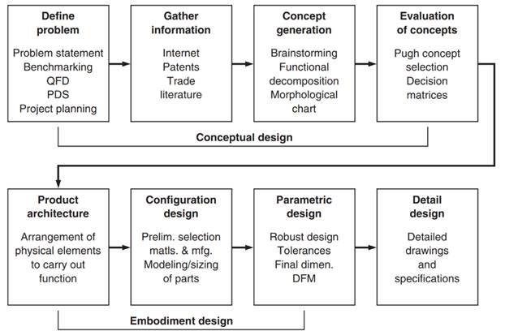
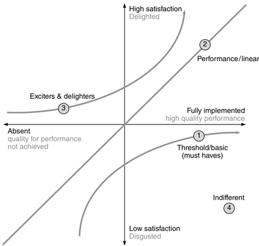
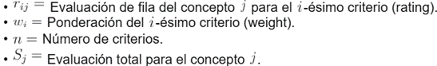

![IM]()
INGENIERÍA DE DISEÑO (0992)
Objetivo(s) del curso:
El alumno diseñará dispositivos aplicando las metodologías de diseño y técnicas asociadas.
1. Introducción.
1.1 Los procesos de diseño.
INTRODUCCIÓN
El Diseño de Ingeniería representa la columna vertebral de la práctica profesional en este campo y es un proceso intelectual y técnico que va más allá de la mera aplicación de fórmulas científicas y se convierte en un ejercicio de síntesis creativa, concibiendo soluciones originales o reorganizando configuraciones existentes con el objetivo fundamental de satisfacer necesidades sociales identificadas.
El Diseño en Ingeniería se define como un proceso sistemático e inteligente a través del cual los ingenieros generan, evalúan y especifican soluciones para dispositivos, sistemas o procesos cuya forma y función alcancen los objetivos de los clientes y satisfagan las necesidades de los usuarios, todo esto mientras se adhiere a un conjunto predefinido de restricciones.
El núcleo del diseño radica en la dualidad entre el análisis y la síntesis.
La Síntesis es el acto creativo de "unir" elementos existentes de formas novedosas para satisfacer una necesidad (pulling together), mientras que el Análisis es el uso de las ciencias de la ingeniería y herramientas computacionales para predecir el comportamiento de un componente antes de que este posea una forma física.
Este proceso se desarrolla dentro de un marco de restricciones materiales, tecnológicas, económicas, legales y ambientales que el diseñador debe navegar con integridad profesional y responsabilidad.
Es imperativo reconocer que, aunque el proceso de diseño representa apenas aproximadamente el 5% del costo total de desarrollo de un producto, las decisiones tomadas en esta etapa comprometen entre el 70% y el 80% del costo final del ciclo de vida del producto.
La tarea principal de los ingenieros en este proceso es aplicar sus conocimientos científicos y de ingeniería para dar solución de problemas técnicos, y luego optimizar esas soluciones dentro de las consideraciones, requisitos y restricciones establecidos por consideraciones materiales, tecnológicas, económicas, legales, ambientales y humanas.
La creación mental de un nuevo producto es responsabilidad de los ingenieros de diseño y desarrollo, mientras que su realización física corresponde a los ingenieros de producción.
El diseño (Design) es fundamental para la ingeniería. Se puede definir formalmente como la actividad que establece y define soluciones y estructuras pertinentes para problemas que no se han resuelto antes, o nuevas soluciones a problemas que se han resuelto previamente de una manera diferente. La creación mental de un nuevo producto es la tarea de los ingenieros de diseño y desarrollo.
La práctica del diseño industrial (DI), componente vital del proceso, se enfoca específicamente en optimizar la función, el valor y la apariencia de los productos para el beneficio mutuo del usuario y el fabricante.
En la era contemporánea, el diseño ha evolucionado de ser una actividad artesanal a un esfuerzo interfuncional que integra la mercadotecnia, la manufactura y la ingeniería, operando bajo filosofías como el "Diseño Total".
Esta integración asegura que las decisiones tomadas en las etapas iniciales, donde se compromete la mayor parte del costo del producto, sean precisas y fundamentadas en modelos técnicos y económicos.

A diferencia del descubrimiento científico, que revela fenómenos o principios preexistentes en la naturaleza, el diseño es un acto deliberado de creación que demanda una planificación meticulosa y una ejecución rigurosa, donde la innovación emerge de la intersección entre el conocimiento técnico, la restricción práctica y la visión humana.
"El diseño establece y define soluciones y estructuras pertinentes para problemas no resueltos con anterioridad, o nuevas soluciones a problemas previamente abordados de manera diferente".
Esta concepción subraya cuatro dimensiones intrínsecas del proceso: la creatividad (capacidad de generar lo que no existía), la complejidad (manejo simultáneo de múltiples variables interdependientes), la elección (selección racional entre alternativas en todos los niveles de abstracción) y el compromiso (equilibrio entre requisitos técnicos, económicos y sociales frecuentemente antagónicos).
Estas facetas reflejan la esencia multidisciplinaria del diseño, donde la excelencia técnica debe armonizarse con la viabilidad económica, la aceptación social y la sostenibilidad ambiental, consolidándose como una disciplina híbrida que combina rigor analítico con intuición artística, y donde la experiencia práctica resulta tan valiosa como el conocimiento teórico.
· Alcance del diseño: Abarca desde la concepción de la idea hasta la documentación final para la producción.
· Análisis vs. Síntesis: El análisis implica el uso de la ciencia para predecir el comportamiento de un diseño antes de su fabricación física, mientras que la síntesis es la identificación y combinación de elementos para formar el producto.
· Consideraciones de un buen diseño: Debe ser funcional, seguro, confiable, competitivo en costo y estéticamente aceptable.
· Naturaleza de la actividad: El diseño es una actividad polifacética que impacta casi todas las esferas de la vida humana y depende de una base sólida en matemáticas, física y mecánica.
· Responsabilidad del diseñador: Los ingenieros de desarrollo determinan decisivamente las propiedades técnicas, económicas y ecológicas del producto final.
· Simultaneidad: El diseño moderno requiere un enfoque interfuncional que integre el marketing, la ingeniería y la manufactura desde las fases iniciales.
Importancia del proceso de diseño de ingeniería
La evolución del diseño moderno ha sido catalizada por paradigmas como el Diseño Concurrente, que integra ciclos de retroalimentación temprana entre disciplinas, y el Diseño Basado en Sistemas, que aborda productos como entidades complejas con interfaces físicas y funcionales interconectadas.
Un ejemplo emblemático es el desarrollo del Boeing 777, primer avión diseñado completamente mediante herramientas CAD 3D, donde 238 equipos interdisciplinarios colaboraron globalmente en tiempo real, eliminando prototipos físicos y reduciendo cambios en un 50% respecto a procesos tradicionales. Este caso ilustra cómo la metodología de diseño trasciende la resolución de problemas técnicos para convertirse en un framework estratégico que determina la competitividad industrial.
DISEÑO
En el contexto de la Ingeniería de Diseño Avanzada y la innovación tecnológica de alto impacto, el diseño constituye un eje epistemológico y operativo que integra, de manera sinérgica y metódica, capacidades analíticas, creativas y de síntesis para desarrollar soluciones inéditas o transformar de forma óptima sistemas complejos ya existentes.
Este proceso no se limita a la definición formal o estructural de un producto o sistema, sino que comprende la gestión global de decisiones estratégicas, científicas y técnicas que amalgaman principios físicos, tecnologías emergentes, sostenibilidad, cumplimiento regulatorio y consideraciones socioculturales. Desde la perspectiva de un investigador con formación doctoral, el diseño es simultáneamente un ejercicio de investigación aplicada, un catalizador de innovación disruptiva y un proceso de ingeniería integral.
El análisis, sustentado en modelos matemáticos avanzados, simulaciones de alta precisión, algoritmos predictivos robustos y ensayos experimentales rigurosos, se fusiona con la síntesis, entendida como la configuración coherente de funciones, materiales, procesos productivos y arquitecturas de sistemas para obtener soluciones resilientes, eficientes, sostenibles y escalables.
Características Clave
No existe una secuencia única universalmente aceptada de pasos que conduzca a un diseño funcional; diferentes autores o diseñadores han descrito el proceso de diseño en tan solo cinco pasos o hasta en 25. Sin embargo, los métodos estructurados son valiosos porque:
· Hacen explícito el proceso de toma de decisiones, permitiendo que todos en el equipo comprendan los fundamentos de cada decisión.
· Actúan como listas de verificación (checklists) de los pasos clave, asegurando que no se olviden aspectos importantes.
· Son sumamente autodocumentados.
· No deben aplicarse ciegamente, sino adaptarse y modificarse para satisfacer las necesidades únicas del equipo y el entorno institucional.
El proceso de diseño es inherentemente iterativo, lo que significa que a menudo se revisan y refinan pasos anteriores a medida que se obtiene nueva información o se resuelven desafíos.
LOS PROCESOS DE DISEÑO
El proceso de diseño se conceptualiza como una secuencia lógica de pasos o actividades que una empresa emplea para concebir, diseñar y comercializar un artefacto técnico.
Este flujo no es meramente una progresión lineal de tareas, sino un sistema de procesamiento de información y gestión de riesgos que busca transformar una oportunidad de mercado en una descripción detallada y producible.
La estructuración del proceso en fases bien definidas permite a las organizaciones asegurar la calidad, facilitar la coordinación entre equipos interdisciplinarios, planificar hitos naturales y establecer una base para la mejora continua del flujo de trabajo.
Existen diversos modelos de referencia para estructurar estas actividades.
Sin embargo, autores como Pahl y Beitz proponen una división clásica en cuatro fases principales: clarificación de la tarea, diseño conceptual, diseño de configuración (embodiment) y diseño de detalle.
Independientemente del modelo, el proceso es inherentemente iterativo; es común que el descubrimiento de nuevas limitaciones en etapas avanzadas obligue al equipo a retroceder a fases previas para reevaluar conceptos o arquitecturas.
Tipos de Diseños
La estructura del proceso de diseño puede variar significativamente dependiendo de la naturaleza del desafío técnico. La ingeniería de diseño puede adoptar diferentes formas:
· Diseño Original (o diseño innovador): Se encuentra en la cima de la jerarquía. Emplea un concepto original e innovador para satisfacer una necesidad. Un diseño verdaderamente original implica invención, y sus ocurrencias suelen ser raras, pero pueden alterar los mercados existentes.
· Diseño Adaptativo (Adaptive Design): Implica adaptar una solución existente y conocida a una nueva tarea. Por ejemplo, utilizar un nuevo material o proceso en un diseño conocido.
· Diseño de Variantes (Variant Design): Consiste en variar el tamaño o la disposición de los componentes dentro de un concepto de solución existente, sin modificar la función o el principio de solución original.
· Rediseño: La forma más frecuente, enfocada en mejorar un diseño existente para optimizar el rendimiento o reducir costos.
· Sistemas complejos: Productos a gran escala (como aviones o automóviles) que requieren la descomposición en múltiples subsistemas desarrollados en paralelo.
Ciclo de Diseño
El ciclo de diseño se despliega en una serie de fases interdependientes, cada una de las cuales alimenta y ajusta a las demás a través de mecanismos de retroalimentación iterativa:
1. Identificación y delimitación de la necesidad o problema: diagnóstico profundo mediante prospectiva tecnológica, estudios socioeconómicos, evaluaciones de viabilidad, análisis de impacto y benchmarking comparativo de alto nivel.
2. Definición de especificaciones y requisitos funcionales: empleo de marcos como QFD, ingeniería de requerimientos avanzada, análisis funcional de segundo orden y captación sistemática de necesidades explícitas e implícitas.
3. Generación de alternativas conceptuales fundamentadas: aplicación de metodologías de creatividad estructurada, biomimética avanzada, análisis morfológico multidimensional, principios TRIZ y co-creación interdisciplinaria.
4. Selección multicriterio de la alternativa óptima: implementación de AHP, optimización multiobjetivo, simulaciones probabilísticas bajo incertidumbre, análisis de riesgos sistémicos y estudios de sensibilidad multinivel.
5. Desarrollo de diseño preliminar y de detalle: integración de prototipado virtual inmersivo, análisis no lineal de elementos finitos, optimización topológica adaptativa y validaciones ergonómicas en entornos de realidad mixta.
6. Verificación, validación y evaluación experimental: ejecución de protocolos normalizados, aplicación avanzada de FMEA, análisis estocástico de fiabilidad y retroalimentación a partir de big data experimental.
7. Implementación, producción y puesta en servicio: incorporación de manufactura inteligente, control estadístico de procesos en tiempo real, gestión integral de calidad (TQM) y estrategias de mantenimiento predictivo y prescriptivo.
Este proceso, aunque estructurado en fases, es iterativo, adaptativo y resiliente, capaz de absorber innovaciones disruptivas y responder a cambios regulatorios, de mercado o tecnológicos.
Modelado matemático y evaluación en el proceso
Una parte crítica de la transición entre el concepto y la realización física es el modelado. Los modelos pueden ser icónicos (físicos a escala), análogos (diagramas de flujo) o simbólicos (ecuaciones matemáticas).
El modelado permite al equipo investigar alternativas de diseño de manera económica antes de la fabricación. Por ejemplo, para evaluar la eficiencia de un diseño en términos de ensamble, se utiliza el índice de Diseño para Ensamble (DFA), que relaciona el tiempo mínimo teórico con el tiempo real estimado:
Donde:
· : Eficiencia de ensamble.
· : Número mínimo de componentes.
· : Tiempo ideal de ensamble por componente (usualmente 3 segundos).
· : Tiempo total de ensamble actual estimado.
Asimismo, en la etapa de evaluación técnica y económica, es
posible calcular una calificación general ( ) basada en
la media aritmética de la calificación técnica () y la
económica () para
facilitar la toma de decisiones asistida por computadora:
) basada en
la media aritmética de la calificación técnica () y la
económica () para
facilitar la toma de decisiones asistida por computadora:
Tabla de Fases del Proceso de Diseño (Comparativa)
|
Fase (Ulrich & Eppinger) |
Actividades Clave |
Salidas Esperadas |
|
Planeación |
Estrategia corporativa y evaluación tecnológica. |
Declaración de misión del proyecto. |
|
Desarrollo del Concepto |
Identificación de necesidades y generación de alternativas. |
Concepto seleccionado y especificaciones objetivo. |
|
Diseño a Nivel Sistema |
Arquitectura del producto y descomposición en subsistemas. |
Esquema geométrico y planos de flujo de proceso. |
|
Diseño de Detalle |
Especificación de materiales, geometrías y tolerancias finales. |
Documentación de control y archivos CAD finales. |
|
Pruebas y Refinamiento |
Construcción de prototipos alfa y beta. |
Validación de funcionalidad y confiabilidad. |
Los costos de manufactura () pueden estimarse proporcionalmente en función de factores de escala geométrica () cuando se desarrollan series de productos similares:
Este enfoque asegura que el proceso de desarrollo sea no solo una búsqueda de la excelencia técnica, sino también un camino hacia la viabilidad económica y el éxito en el mercado competitivo.
EL PROCESO GENÉRICO DE DISEÑO
Un proceso de desarrollo del producto es la secuencia de pasos o actividades que una empresa utiliza para concebir, diseñar y comercializar un producto.
Seguir un proceso de desarrollo bien definido es crucial para asegurar la calidad, facilitar la coordinación, planificar el proyecto, y servir como estándar de referencia para la mejora continua.
El proceso de diseño se puede ver como un sistema de procesamiento de información. Se inicia con entradas (objetivos corporativos, tecnologías disponibles) y concluye cuando toda la información necesaria para soportar la producción y ventas ha sido creada y comunicada.
Fases del Proceso de Diseño (Según Dieter y Schmidt)
Un modelo del proceso de diseño incluye las siguientes actividades interrelacionadas:
· Definición del problema: Plantear el problema, Benchmarking (comparación con la competencia), Despliegue de la Función de Calidad (QFD), y establecer Especificaciones y Planeación.
· Recopilar información: Utilizando fuentes como Internet, patentes y literatura comercial.
· Generación conceptual (Conceptualization): Incluye Lluvia de ideas, Descomposición funcional, y Matriz morfológica.
· Evaluación conceptual: Desarrollo del concepto y uso de Matrices de decisión.
· Arquitectura del producto (Product Architecture): Arreglo físico de los elementos para llevar a cabo una función, definiendo la modularidad.
· Diseño de configuración (Configuration Design): Selección preliminar de materiales y manufactura, y Dimensionamiento de partes.
· Diseño paramétrico (Parametric Design): Diseño robusto, Tolerancias y Dimensiones finales, y DFX (Diseño para la Excelencia).
· Diseño de detalle (Detail Design): Planos y especificaciones de manufactura, Diseño conceptual. Incluye dibujos de ensamble e instrucciones, lista de materiales, especificación detallada del producto, decisiones de fabricación interna o externa, estimación detallada de costos y revisión del diseño.
Fases del Proceso de Desarrollo del Producto (Enfoque Genérico)
El proceso genérico de desarrollo de productos consta de seis fases principales:
Fase 0: Planeación
· Descripción: Precede a la aprobación del proyecto y al lanzamiento del proceso real de desarrollo del producto. Comienza con la estrategia corporativa e incluye la evaluación de desarrollos tecnológicos y objetivos de mercado.
· Salida: La declaración de la misión del proyecto, que especifica el mercado objetivo del producto, las metas del negocio, las suposiciones clave y las restricciones.
Fase 1: Desarrollo del Concepto
· Descripción: Se identifican las necesidades del mercado objetivo, se generan y evalúan conceptos alternativos del producto, y se selecciona uno o más conceptos para desarrollo y pruebas adicionales.
· Salida: Un concepto (descripción de la forma, función y características de un producto), generalmente acompañado por un conjunto de especificaciones, un análisis de productos de la competencia y una justificación económica del proyecto.
Fase 2: Diseño a Nivel de Sistema
· Descripción: Incluye la definición de la arquitectura del producto y la descomposición del producto en subsistemas y componentes. El esquema de ensamble final para el sistema de producción se suele definir también durante esta fase.
· Salida: Un diseño geométrico del producto, una especificación funcional de cada uno de los subsistemas y un diagrama de flujo preliminar del proceso para el ensamble final.
Fase 3: Diseño de Detalle
· Descripción: Se especifica completamente la geometría, materiales y tolerancias de todas las partes únicas del producto, y se identifican todas las partes estándar a adquirir de proveedores. Se establece un plan de proceso y se diseña el herramental para cada pieza.
· Salida: La documentación de control del producto (dibujos o archivos CAD que describen la geometría, especificaciones de piezas compradas y planes de proceso para fabricación y ensamble). Los problemas críticos son el costo de producción y el desempeño robusto del producto.
Fase 4: Pruebas y Refinamiento
· Descripción: Comprende la construcción y evaluación de múltiples versiones de preproducción del producto. Se construyen prototipos alfa (con piezas de producción, pero con procesos de prototipado) y prototipos beta (extensamente probados por clientes).
Fase 5: Inicio de Producción
· Descripción: El producto se fabrica utilizando el sistema de producción previsto. El propósito es capacitar al personal y resolver cualquier problema en los procesos. Los productos de esta fase se entregan a clientes preferidos para evaluación.
Directrices y Herramientas en el Proceso de Diseño
La fase de Diseño de Detalle implica la preparación de documentos de producción, como planos y especificaciones de manufactura. Para esto, se necesitan sistemas de numeración de piezas y clasificación. El Diseño para Manufactura (DFM) es crucial para reducir costos de fabricación y mejorar la calidad del producto. Un subconjunto importante del DFM es el Diseño para Ensamble (DFA).
Índice DFA: Una métrica para estimar la eficiencia del ensamble:
Donde el número mínimo teórico de piezas se determina preguntando por cada pieza si necesita moverse, si debe ser de un material diferente o si debe separarse para acceso/reparación.
La estimación de costos unitarios es también una parte fundamental del proceso de diseño, especialmente en las etapas de detalle:
Tipos de Proyectos y sus Procesos
El proceso genérico es más aplicable a productos influenciados por el mercado. Otros tipos de proyectos requieren variantes del proceso genérico:
|
Tipo de Proceso |
Descripción |
Características Distintivas |
|
Productos Genéricos |
El proceso generalmente incluye planeación, desarrollo del concepto, diseño a nivel sistema, diseño de detalle, pruebas y refinamiento, e inicio de producción. |
Influenciados por el mercado, usando cualquier tecnología necesaria. |
|
Impulsados por Tecnología |
El desarrollo del concepto se basa en una tecnología determinada. La fase de planeación empareja la tecnología con el mercado. |
Empiezan con una tecnología central y buscan una oportunidad de mercado. |
|
Productos de Proceso Intensivo |
El proceso de producción pone restricciones estrictas sobre las propiedades del producto, por lo que el diseño del producto y el proceso deben desarrollarse juntos desde el inicio. |
El producto no puede separarse del proceso de producción. |
|
Productos de Alto Riesgo |
Las incertidumbres técnicas o de mercado crean altos riesgos. Los riesgos se identifican y rastrean en todo el proceso. |
El análisis y pruebas de actividades ocurren tan pronto como sea posible para mitigar riesgos. |
|
Sistemas Complejos |
Los sistemas deben descomponerse en múltiples subsistemas. Los equipos trabajan en paralelo. |
La integración y validación del sistema es crítica en las fases de prueba y refinamiento. |
1.2 Definición del proyecto.
DEFINICIÓN DEL PROYECTO
La definición del proyecto o planteamiento del problema es considerada la etapa más crítica del proceso de diseño, ya que una mala formulación puede llevar a soluciones que no satisfacen la necesidad real.
El proceso de definición del proyecto, a menudo denominado análisis de necesidades o planteamiento del problema, constituye el pilar fundamental sobre el cual se erige cualquier esfuerzo riguroso de ingeniería de diseño.
Este proceso, a menudo llamado "análisis de necesidades", implica transformar enunciados vagos del cliente en requisitos técnicos precisos y medibles.
La salida principal de esta fase es la Especificación del Diseño del Producto (PDS) o requisitos de ingeniería, un documento dinámico que evoluciona y guía todo el desarrollo subsiguiente.
En esta fase embrionaria, el objetivo primordial radica en comprender la problemática de manera exhaustiva para establecer una base sólida para todas las actividades subsecuentes.
No se trata meramente de aceptar una instrucción vaga, sino de realizar una síntesis intelectual que permita "unir" elementos existentes o generar estructuras pertinentes para problemas no resueltos con anterioridad, satisfaciendo así una necesidad social identificada.
Esta etapa transforma enunciados a menudo ambiguos del cliente en una descripción técnica precisa que incluye objetivos, metas, el estado actual frente al deseado, y las restricciones ineludibles impuestas por el marco tecnológico y económico.
Para establecer una base sólida, se deben seguir pasos sistemáticos en la definición:
· Identificación de clientes y sus necesidades: Es imperativo determinar con precisión quiénes son los clientes primarios (compradores) y secundarios (usuarios finales, personal de mantenimiento, manufactura, etc.), ya que sus necesidades y percepciones de valor pueden divergir sustancialmente.
· Análisis de necesidades (Voice of the Customer): El equipo debe interactuar directamente con el entorno del usuario para captar tanto necesidades explícitas como latentes (no dichas), evitando sesgar la investigación con suposiciones tecnológicas prematuras.
· Establecimiento de especificaciones objetivo: Traducción de las necesidades en términos técnicos mediante métricas cuantificables.
· Benchmarking competitivo: Comparar los objetivos con los productos existentes en el mercado para asegurar la competitividad.
· Delimitación de restricciones y metas: Se deben fijar los límites o restricciones (constraints) que, de ser violados, invalidarían la solución, junto con los objetivos financieros y de mercado que dictarán el éxito comercial
· Declaración de misión: Documento que resume la descripción del producto, la propuesta de valor, los mercados objetivo y las restricciones clave (presupuesto, tiempo, tecnología).
Herramientas como el Despliegue de la Función de Calidad (QFD) y su "Casa de la Calidad" son fundamentales para organizar gráficamente la relación entre lo que el cliente desea y cómo la ingeniería lo implementará.
Durante la definición, también se deben considerar aspectos económicos desde el inicio, utilizando modelos de flujo de efectivo y el Valor Presente Neto (VPN) para justificar la inversión.
La incertidumbre inherente en esta fase se puede modelar
estadísticamente, donde la desviación estándar de un resultado que
depende de varias variables  se estima
como:
se estima
como:
Finalmente, la definición del proyecto debe culminar en un acuerdo formal o "bitácora del producto" que sirve como contrato entre el equipo de desarrollo y la administración, asegurando que todos los involucrados compartan los mismos objetivos y limitaciones estratégicas.
Especificaciones de diseño del producto (PDS)
La salida técnica de mayor relevancia en la definición del proyecto es la Especificación de Diseño del Producto (PDS por sus siglas en inglés), un documento de control dinámico y evolutivo que describe con precisión qué debe ser el producto en términos de rendimiento, vida útil, confiabilidad, costos y seguridad.
La PDS actúa como el mecanismo de control fundamental que garantiza que el diseño permanezca en equilibrio con las necesidades reales del usuario a lo largo de todo el ciclo de desarrollo.
A diferencia de los conceptos de solución, la PDS se centra en el "qué" debe hacer el sistema y no en el "cómo", proporcionando así la máxima libertad creativa para la generación de alternativas.
El establecimiento de especificaciones objetivo requiere una métrica cuantificable y un valor objetivo.
Para determinar la importancia de estas métricas, se suele emplear un análisis estadístico de la ponderación relativa de las necesidades.
Si consideramos una métrica  relacionada
con múltiples necesidades
relacionada
con múltiples necesidades  con
ponderaciones de importancia
con
ponderaciones de importancia  , la
importancia relativa de dicha métrica puede expresarse mediante la siguiente
relación:
, la
importancia relativa de dicha métrica puede expresarse mediante la siguiente
relación:
Donde:
·
es la
importancia calculada de la métrica  .
.
·
 representa
el peso o importancia relativa de la necesidad
representa
el peso o importancia relativa de la necesidad  asignada
por el cliente.
asignada
por el cliente.
·
es la
fuerza de la relación entre la necesidad  y la
métrica
y la
métrica  (comúnmente
escalada en valores de 9, 3, 1 o 0 para relaciones fuertes, medias, débiles o
nulas, respectivamente).
(comúnmente
escalada en valores de 9, 3, 1 o 0 para relaciones fuertes, medias, débiles o
nulas, respectivamente).
|
Categoría de la PDS |
Descripción Técnica |
Ejemplo de Métrica Sugerida |
|
Rendimiento |
Comportamiento funcional y eficiencia. |
Potencia de salida (kW), Velocidad (m/s). |
|
Entorno |
Condiciones de operación externas. |
Rango de temperatura (°C), Resistencia UV. |
|
Vida Útil |
Confiabilidad y durabilidad temporal. |
Tiempo medio entre fallas (MTBF), Ciclos. |
|
Económica |
Restricciones de costo y precio. |
Costo de manufactura unitario ($ USD). |
Despliegue de la Función de Calidad (QFD)
El método QFD es una herramienta de planeación y gestión de la calidad que permite canalizar la "voz del cliente" a través de todas las fases del desarrollo de un producto.
Su manifestación más estructurada, la "Casa de la Calidad" (House of Quality), organiza de manera gráfica y sistemática los requerimientos del cliente frente a las características de ingeniería.
Esta metodología facilita la identificación de las características críticas para la calidad (CTQ), asegurando que el diseño final satisfaga las expectativas del mercado y minimizando los cambios de ingeniería costosos en etapas avanzadas de detalle.
· Matriz de relaciones: Cruza los requerimientos del cliente (Whats) con los parámetros técnicos de ingeniería (Hows).
· Evaluación competitiva (Benchmarking): Compara los valores objetivo del diseño con los productos líderes del sector para establecer metas que superen a la competencia actual.
· Matriz de correlación técnica: Identifica las interdependencias entre las especificaciones de ingeniería, revelando posibles conflictos físicos o "trade-offs" que deben resolverse.
Justificación Económica y Planeación del Proyecto
Toda definición de proyecto de ingeniería debe incluir una evaluación de viabilidad económica que justifique la asignación de recursos y capital.
Para ello, se emplean modelos financieros basados en el Valor Presente Neto (VPN), que descuentan los flujos de efectivo futuros (ingresos y egresos proyectados) a una tasa de interés que representa el costo de oportunidad del capital de la empresa.
Un VPN positivo es un indicador indispensable de que el proyecto de desarrollo es financieramente viable y generará valor para los interesados.
El cálculo del VPN se fundamenta en la sumatoria de los flujos de dinero descontados:
Donde:
· representa el flujo neto de efectivo esperado en el periodo .
· es la tasa de descuento periódica o tasa de interés de referencia.
·
 es el
número total de periodos (trimestres o años) del horizonte del proyecto.
es el
número total de periodos (trimestres o años) del horizonte del proyecto.
· es la inversión inicial requerida o costos de arranque (start-up costs).
Finalmente, la definición concluye con una "Declaración de Misión" o "Bitácora del Producto" que actúa como un contrato formal entre el equipo de diseño y la administración, especificando el mercado objetivo, las suposiciones clave y el programa maestro de tareas para garantizar el éxito del desarrollo.
Conceptualización del Problema
La definición del problema implica describir de manera amplia la situación o el objeto de estudio, ubicándolo en un contexto que permita comprender su origen y sus relaciones.
En un trabajo escrito, se presenta de forma narrativa, no mediante preguntas directas.
Es una parte importante del proceso de diseño.
El proceso de diseño comienza con la clarificación y definición del problema o tarea. La Clarificación de la tarea busca identificar y documentar los requisitos que determinarán la solución, formándose cuantitativamente siempre que sea posible.
El resultado de este proceso es la Lista de Requisitos (Requirements List), también conocida como Especificación de Diseño (Design Specification), que representa el criterio con el cual se juzgará el éxito del proyecto de diseño.
Elementos y Contexto del Problema
Al plantear el problema, se deben considerar los siguientes elementos:
· ¿Cuáles son los elementos del problema? Datos, situaciones y conceptos.
· ¿Cuáles son los hechos anteriores que guardan relación con el problema?
· ¿Cuál es la situación actual?
· ¿Cuál es la relevancia del problema? ¿Por qué es relevante?
La definición de los objetivos para la solución deseada implica responder: ¿Qué objetivos se espera que satisfaga la solución? ¿Qué propiedades debe tener? ¿Qué propiedades no debe tener?
Fuentes de Información para la Definición del Problema
Debido a la complejidad de plantear un problema, es necesaria la consulta de fuentes, y la veracidad de los juicios emitidos dependerá del origen de la información.
Las principales fuentes para obtener respuestas a estas preguntas incluyen:
· Observación de problemas prácticos en cualquier ámbito (laboral, escolar, comunitario).
· Revisión exhaustiva de la bibliografía e investigaciones sobre el tema.
· Consultar a expertos en el área.
· Revisar líneas de investigación de diferentes instituciones.
· Las necesidades del usuario son una parte importante del planteamiento del problema en diseño. El equipo de diseño puede comenzar a definirlas a partir de su propia experiencia: lo observado, lo escuchado y lo experimentado.
Declaración del Problema y de la Misión
La Declaración del Problema es la primera parte para plantear el problema en diseño. Esta describe ampliamente la situación u objeto de estudio, ubicándolo en un contexto que permite comprender su origen y sus relaciones.
Los elementos del problema a considerar son: Datos, situaciones y conceptos. Se debe analizar los hechos anteriores que guardan relación con el problema, la situación actual, y la relevancia o importancia del problema.
El proceso de planeación del producto culmina con la Declaración de la Misión, un documento que resume la dirección a seguir por el grupo de desarrollo del producto.
Incluye la siguiente información:
· Breve descripción del producto: Identifica la función básica del producto sin implicar un concepto específico.
· Propuesta de valor: Articula las razones críticas por las que un cliente compraría el producto.
· Objetivos de negocio: Metas para tiempo, costo y calidad (por ejemplo, calendario de introducción del producto, operación financiera deseada, objetivos de participación de mercado).
· Mercado(s) objetivo: Define el mercado primario y secundario.
· Suposiciones y restricciones: Guían la tarea de desarrollo (por ejemplo, estrategias de manufactura, servicio y ambiente).
· Involucrados (Stakeholders): Lista de todos los grupos de personas afectados por el éxito del producto (clientes externos e internos, personal de ventas, servicio, producción).
ESPECIFICACIONES Y REQUERIMIENTOS DEL PRODUCTO
Las necesidades del cliente se expresan en su "lenguaje", pero para el diseño se establecen especificaciones del producto, que describen con detalle preciso y medible lo que el producto debe hacer.
No indican cómo satisfacer las necesidades, sino qué se debe lograr. Las especificaciones deben reflejar las necesidades del cliente, diferenciar el producto de la competencia y ser técnica y económicamente realizables.
Existen dos etapas principales para establecer especificaciones:
1. Especificaciones objetivo: Se establecen después de identificar las necesidades del cliente, antes de generar y seleccionar conceptos. Representan las metas del equipo.
2. Especificaciones finales: Se revisan después de que se ha seleccionado y probado un concepto, reflejando las restricciones inherentes al concepto y las concesiones entre costo y desempeño.
A diferencia de las necesidades (la información subyacente de los usuarios), los requerimientos describen qué se espera que el producto haga y no cómo debe hacerlo.
Herramientas Clave en la Definición del Proyecto
o Lista de requerimientos: Es el resultado de clarificar los objetivos de una solución, tabulando aspectos cuantitativos y cualitativos (demandas y deseos). Debe ser clara y, si es posible, cuantificada.
o Especificación de Diseño de Producto (PDS por sus siglas en inglés): Es el documento que define los requisitos del producto y sirve como la especificación contra la cual se juzga el éxito del proyecto de diseño.
o Casa de la Calidad (House of Quality - HOQ): Herramienta que resume mucha información en un solo diagrama, incluyendo aspectos del producto, competidores y clientes. Ayuda a establecer valores objetivo para las características de ingeniería ("Hows").
o

Analysis Question Builder (AQB): Herramienta que permite formular las preguntas adecuadas antes de iniciar una investigación, enfocándose en los detalles técnicos del problema. Implica definir el centro del análisis (producto/proceso), factores de influencia y realizar preguntas 5W+H.Clasificación de Necesidades (Kano):
Ø Esperadas (Expected): Generalmente son requisitos implícitos que deben cumplirse en todas las circunstancias; su cumplimiento es obvio y vital.
Ø Dichas (Spoken): Necesidades explícitas articuladas por el cliente.
Ø De Atractivo (Attractive): Necesidades que, si se cumplen, aumentan la satisfacción del cliente de forma no lineal.
Requerimientos de Diseño (Requirements)
Los requisitos representan el conjunto de necesidades y deseos del cliente recopilados y clasificados. A diferencia de la necesidad, el requerimiento describe el qué se espera que el producto haga, y no el cómo debe hacerlo.
Los requerimientos deben expresarse en términos de atributos del diseño:
1. Expresarse en términos de lo que el diseño debe hacer, no en cómo podría hacerlo.
2. Ser enunciados positivos, en la medida de lo posible.
3. Evitar el uso de "debe" o "debería", ya que da una calificación de obligatorio.
Lista de Cotejo de Categorías de Requerimientos
Los requerimientos no provienen sólo del usuario, sino que abarcan categorías técnicas amplias:
|
Categoría Principal |
Ejemplos |
|
Geometría |
Tamaño, altura, amplitud, largo, diámetro, espacio requerido. |
|
Cinemática |
Tipo de movimiento, dirección, velocidad, aceleración. |
|
Fuerzas |
Dirección, magnitud, frecuencia, peso, cargas, rigidez, elasticidad. |
|
Energía |
Salidas, eficiencia, pérdidas, fricción, ventilación, presión, temperatura, capacidad. |
|
Material |
Propiedades físicas y químicas, flujo y transporte de materiales. |
|
Señales |
Entradas y salidas, formas, display, control del equipo. |
|
Seguridad |
Seguridad operacional y ambiental. |
|
Ergonomía |
Relación hombre-máquina, comodidad, iluminación. |
|
Producción |
Limitaciones de fábrica, métodos preferentes, calidad alcanzable, tolerancias. |
|
Reciclado |
Reutilización, reprocesamiento, desechos. |
|
Costos |
Costo permisible máximo de manufactura, costos de herramental. |
|
Tiempos |
Fecha final de desarrollo, planeación del proyecto, fecha de entrega. |
Especificaciones del Producto (PDS)
Las Especificaciones (Specifications) son la traducción de las necesidades del cliente a términos técnicos. Una especificación proporciona una descripción precisa de lo que el producto debe ser.
• Métrica: Enunciado que describe la característica técnica que describe un requerimiento.
• Magnitud: Cuánto medirá esa métrica.
• Unidad: En qué unidades se está midiendo.
Por cada requerimiento debe redactarse al menos una especificación.
Evaluación de Requisitos (Benchmarking)
El Benchmarking (Comparación con la competencia) es un proceso de medición de las operaciones de una empresa con respecto a las mejores prácticas de empresas dentro y fuera del sector.
Para iniciar un Benchmarking se debe:
1. Identificar los requerimientos que se consideren más importantes (aplicable a procesos y productos físicos).
2. Identificar las mejores empresas o productos que satisfagan mejor el requerimiento al menor costo.
3. Evaluar en una escala (del 1 al 5) qué tan bien satisfacen esos productos los requerimientos de los usuarios. Esta evaluación debe ser realizada por los usuarios en la medida de lo posible.
Ecuación de Evaluación Conceptual
Para la Evaluación de Conceptos (una etapa de la selección de conceptos) se utiliza una evaluación ponderada, donde la evaluación total () para un concepto () se calcula mediante la suma ponderada de sus calificaciones en cada criterio.
Donde:

2. Diseño conceptual.
2.1 Especificación del problema.
Diseño Conceptual
El diseño conceptual representa la fase ontológica más significativa dentro del ciclo de vida del desarrollo de un producto, pues constituye el núcleo de procesamiento de información donde la abstracción de las necesidades del cliente se transmuta en principios de solución técnica fundamentados en la viabilidad física y económica.
En este estrato del proceso, el ingeniero no se limita a la mera generación de formas, sino que debe identificar problemas esenciales mediante procesos de abstracción rigurosa, estableciendo estructuras funcionales que sirvan como andamiaje para la búsqueda de principios de solución idóneos.
Es imperativo reconocer que, si bien esta fase consume una fracción mínima del presupuesto operativo, las decisiones tomadas aquí comprometen irrevocablemente entre el 70% y el 80% de los costos finales de manufactura y mantenimiento; por lo tanto, un error conceptual rara vez puede ser corregido mediante una ingeniería de detalle brillante.
La transición hacia una solución técnica requiere una metodología convergente que, partiendo de una declaración de misión clara, reduzca la incertidumbre mediante la validación continua de la factibilidad técnica o "estudio de factibilidad".
Este proceso se apoya en tres componentes primarios: la generación de conceptos basada en la Especificación del Diseño del Producto (PDS), la generación de criterios en grupos interdisciplinarios y la evaluación sistemática de las alternativas para converger en una variante óptima.
La calidad de esta fase se maximiza cuando se impone un embargo absoluto sobre el "juicio visceral" o corazonadas, sustituyéndolo por un análisis basado en modelos, ya sean analíticos o físicos, que permitan predecir el comportamiento del sistema antes de su materialización.
· Abstracción del Problema: Consiste en omitir detalles no esenciales para identificar el núcleo funcional del desafío técnico.
· Pensamiento Divergente-Convergente: El equipo debe explorar el universo completo de alternativas (divergencia) para luego filtrar y seleccionar mediante criterios objetivos (convergencia).
· Naturaleza Iterativa: El diseño conceptual no es lineal; requiere retroalimentación constante desde la evaluación hacia la generación para refinar las soluciones propuestas.
Especificación del problema
La especificación del problema, frecuentemente referenciada como la clarificación de la tarea o el análisis de necesidades, se erige como el paso más crítico y, paradójicamente, a menudo el más subestimado por los grupos de desarrollo.
La verdadera problemática rara vez coincide con la percepción inicial del cliente; por ello, es fundamental traducir los requisitos subjetivos y a menudo ambiguos en una descripción técnica precisa y medible.
Esta etapa fundacional establece los límites del "espacio de solución" dentro del cual el diseñador debe operar, asegurando que el producto final no solo sea funcional, sino también competitivo y económicamente viable.
El resultado tangible de esta fase es la Especificación del Diseño del Producto (PDS), un documento dinámico o "vivo" que evoluciona a medida que el equipo adquiere un conocimiento más profundo del sistema.
La PDS debe articular con precisión qué debe ser el producto, evitando indicar cómo debe lograrse, para preservar la libertad creativa en las fases posteriores.
Una especificación técnica robusta comprende métricas cuantificables, rangos de operación, restricciones legales, y metas de costo que actúan como el estándar de control contra el cual se medirá el progreso del proyecto desde el concepto hasta la producción.
Identificación de Necesidades y Métricas de Ingeniería
El proceso se inicia con la recopilación de datos sin procesar directamente de los involucrados, utilizando técnicas como entrevistas a "usuarios líderes", grupos de enfoque y la observación directa en el entorno de uso.
Estas necesidades, expresadas en el lenguaje del cliente, deben ser interpretadas y organizadas en una jerarquía que distinga entre "demandas" (requisitos obligatorios que, de no cumplirse, invalidan la solución) y "deseos" (requisitos que se deben satisfacer en la medida de lo posible).
Para cuantificar estas necesidades, se establecen métricas de ingeniería que actúan como variables dependientes del diseño.
Para determinar la relevancia de cada métrica con respecto a la satisfacción global del cliente, se utiliza una ponderación de importancia.
La importancia absoluta de una especificación técnica () se puede calcular mediante la relación de la fuerza de su impacto en cada requerimiento del cliente:
Donde:
·
es el
valor de importancia asignado por el cliente al requerimiento  (generalmente
en una escala del 1 al 5).
(generalmente
en una escala del 1 al 5).
·
es el
valor de la relación en la matriz entre el requerimiento  y la
especificación
y la
especificación  (típicamente
usando valores de 9 para fuerte, 3 para media y 1 para débil).
(típicamente
usando valores de 9 para fuerte, 3 para media y 1 para débil).
|
Categoría de Métrica |
Parámetros Típicos |
Unidades sugeridas |
|
Rendimiento Funcional |
Flujo de energía, potencia, velocidad. |
kW, m/s, RPM |
|
Factores Humanos |
Ergonomía, facilidad de control, apariencia. |
Escalas subjetivas (1-5) |
|
Limitantes Físicas |
Masa, dimensiones, propiedades del material. |
kg, mm, MPa |
|
Factores Económicos |
Costo unitario, inversión en herramental. |
USD, MXN |
Despliegue de la Función de Calidad (QFD) y Benchmarking
El Despliegue de la Función de Calidad (QFD), específicamente a través de su matriz inicial conocida como la "Casa de la Calidad" (House of Quality), es la herramienta más potente para garantizar que la "voz del cliente" se traduzca fielmente en características de ingeniería.
Este método gráfico permite organizar de manera sistemática los requerimientos, las métricas, las correlaciones técnicas y el benchmarking competitivo, facilitando la identificación de las características críticas para la calidad (CTQ).
El benchmarking, por su parte, consiste en medir el rendimiento de los productos competidores líderes para establecer valores objetivo que superen el estado del arte actual.
Durante la especificación, es vital considerar la robustez del diseño ante el "ruido" o variaciones incontrolables (manufactura, ambiente, deterioro).
La pérdida de calidad experimentada por el usuario debido a
la desviación de una característica de su valor objetivo ( ) puede
modelarse mediante la función de pérdida cuadrática de Taguchi:
) puede
modelarse mediante la función de pérdida cuadrática de Taguchi:
Donde:
·
es la
pérdida de calidad cuando la característica es  .
.
·
 es una
constante de pérdida económica específica.
es una
constante de pérdida económica específica.
·
 es el
valor objetivo nominal de la especificación.
es el
valor objetivo nominal de la especificación.
Esta formulación matemática subraya que cualquier desviación del valor nominal, incluso si se encuentra dentro de los límites de tolerancia, resulta en una pérdida de utilidad para la sociedad, incentivando al ingeniero a buscar no solo la factibilidad, sino la optimización centrada en el objetivo.
Al finalizar esta fase, el equipo debe poseer una bitácora del producto que documente la misión, las necesidades jerarquizadas y las especificaciones objetivo (marginales e ideales) que guiarán la generación de conceptos.
2.2 Generación y evaluación de alternativas.
Generación y evaluación de alternativas
La fase de generación y evaluación de alternativas representa el núcleo operativo del diseño conceptual, donde el ingeniero transita de la abstracción funcional a la cristalización de soluciones técnicas mediante procesos de pensamiento divergente y convergente.
Este estadio no se limita a una simple recopilación de ideas; constituye un sistema de procesamiento de información donde la síntesis el acto creativo de unir elementos para formar un todo se fundamenta en el razonamiento productivo o abductivo.
En este contexto, la generación de conceptos busca explorar el universo de posibilidades técnicas para satisfacer las necesidades del cliente, mientras que la evaluación actúa como un filtro riguroso que utiliza modelos analíticos y criterios ponderados para reducir la incertidumbre y seleccionar la variante con mayor potencial de éxito comercial y técnico.
Es imperativo que este proceso sea iterativo, permitiendo que el equipo de desarrollo refine sus propuestas a medida que adquiere mayor conocimiento sobre las restricciones físicas y económicas del proyecto.
· Naturaleza de la Síntesis: Se define como el proceso de hibridación donde soluciones parciales a subproblemas se integran en conceptos totales coherentes.
· Pensamiento Divergente-Convergente: Esta filosofía busca expandir el espacio de diseño mediante la creación de múltiples conceptos (divergencia) antes de estrecharlo hacia una solución óptima (convergencia).
· Embargo de Juicio: Durante las etapas iniciales de generación, es vital suspender la crítica para fomentar la fluidez creativa y la aparición de conceptos innovadores.
Metodologías para la Generación de Conceptos
La generación de alternativas se estructura comúnmente a través de un método de cinco pasos que comienza con la aclaración del problema y culmina en la reflexión sobre las soluciones obtenidas.
Una técnica fundamental es la búsqueda externa, la cual implica la recopilación de información de usuarios líderes, expertos, patentes y literatura técnica para identificar soluciones existentes que puedan ser adaptadas.
Complementariamente, la búsqueda interna recurre al conocimiento y creatividad de los miembros del equipo, utilizando métodos individuales o grupales como el brainstorming y la sinéctica para superar bloqueos mentales y generar analogías productivas.
Herramientas avanzadas como TRIZ (Teoría de Resolución de Problemas Inventivos) permiten resolver contradicciones técnicas mediante la aplicación de principios universales de invención extraídos del análisis de patentes.
La exploración sistemática organiza estos fragmentos de solución mediante dos herramientas clave: el árbol de clasificación de conceptos y la tabla de combinación de conceptos.
El árbol permite dividir las posibles soluciones en categorías independientes para facilitar la navegación por el espacio de diseño.
Por su parte, la tabla de combinación (o matriz morfológica) organiza las soluciones por subfunciones, permitiendo una exploración exhaustiva de todas las permutaciones posibles.
Si una matriz tiene  subfunciones
y cada una posee principios
de solución, el número teórico de combinaciones totales (
subfunciones
y cada una posee principios
de solución, el número teórico de combinaciones totales ( ) se estima
mediante la relación productoria:
) se estima
mediante la relación productoria:
´
|
Método de Generación |
Descripción Técnica |
Herramientas Asociadas |
|
Búsqueda Externa |
Recopilación de estado del arte y benchmarking,. |
Patentes, literatura, expertos,. |
|
Búsqueda Interna |
Generación intuitiva basada en analogías y creatividad. |
Brainstorming, Sinéctica, Galería. |
|
Exploración Sistemática |
Organización lógica de fragmentos de solución. |
Matriz morfológica, Árbol de clasificación. |
Evaluación y Selección del Concepto
La selección del concepto es el proceso de evaluar las alternativas generadas con respecto a las necesidades del cliente y otros criterios de ingeniería para identificar la variante ganadora.
Esta fase se divide generalmente en dos etapas: el filtrado (o tamizado) de conceptos y la evaluación ponderada de conceptos. El filtrado, popularizado como el método de Pugh, utiliza una matriz de comparación relativa donde cada concepto se evalúa contra un "datum" o referencia usando una escala simple de (+), (–) o (S).
Este enfoque permite reducir rápidamente el número de candidatos y facilita la combinación de características positivas de diferentes variantes para crear híbridos superiores.
En la etapa de evaluación de conceptos, se aplica una resolución mayor mediante el uso de criterios de selección ponderados y una escala de calificación más fina, típicamente de 1 a 5 puntos.
Aquí, la importancia relativa de cada criterio ( ) se
multiplica por la calificación del concepto (
) se
multiplica por la calificación del concepto ( ) para
obtener un valor de utilidad total (). La suma
ponderada se expresa como:
) para
obtener un valor de utilidad total (). La suma
ponderada se expresa como:
Para asegurar que la decisión sea robusta ante la incertidumbre, se recomienda realizar análisis de sensibilidad, variando las ponderaciones y calificaciones para observar cambios en el orden de mérito.
Finalmente, el equipo puede calcular una calificación técnica () y una económica () normalizadas, las cuales se visualizan en un diagrama de fuerza o diagrama-s.
Si se busca un balance óptimo que penalice desequilibrios
extremos entre ambas dimensiones, se utiliza el método hiperbólico para obtener
la calificación general ( ):
):
Este rigor matemático, complementado con la reflexión cualitativa del equipo, garantiza que el concepto seleccionado no solo cumpla con las especificaciones técnicas (PDS), sino que también sea viable en términos de manufactura, costo y sostenibilidad.
3. Diseño de configuración.
3.1 Diseño para manufactura y otras técnicas de diseño.
Diseño de configuración (Embodiment Design)
El diseño de configuración, a menudo denominado diseño de realización o embodiment design, representa aquella etapa medular del proceso de ingeniería donde el concepto abstracto, previamente validado en su factibilidad funcional, es investido de una forma física definitiva mediante la determinación sistemática de disposiciones espaciales, geometrías de componentes y selección rigurosa de materiales.
Esta fase es considerada el puente crítico entre la síntesis creativa del diseño conceptual y la documentación técnica exhaustiva requerida para la fase de producción masiva.
Durante esta transición, el ingeniero debe trascender la mera definición del principio operativo para enfrentarse a la complejidad de la arquitectura del producto, la cual exige la descomposición del sistema en subsistemas o trozos (chunks) que deben interactuar bajo criterios de compatibilidad espacial y funcional.
En términos epistemológicos, el diseño de configuración es un proceso heurístico e iterativo de toma de decisiones donde el análisis y la síntesis se alternan constantemente para refinar las dimensiones generales y las características críticas de los elementos técnicos.
Es imperativo que en este estadio se realicen verificaciones de durabilidad, costo, seguridad y manufacturabilidad, puesto que las decisiones tomadas en la configuración comprometen irrevocablemente la mayor parte del costo final del ciclo de vida del artefacto.
Estructuralmente, el diseño de configuración se subdivide en tres tareas fundamentales que operan de manera simultánea para garantizar la integridad del sistema técnico:
· Arquitectura del producto: Consiste en el esquema de ordenamiento funcional que asigna operaciones específicas a unidades físicas o módulos, definiendo si la estructura será modular o integral.
· Diseño de configuración de partes: Es la actividad de diseñar piezas de propósito específico, determinando sus características geométricas (agujeros, nervaduras, curvas) y su disposición tridimensional en el espacio.
· Diseño paramétrico: Se enfoca en la determinación de los valores numéricos exactos de las variables de diseño, estableciendo tolerancias y dimensiones finales que garanticen la robustez del desempeño ante factores de ruido.
Este proceso se rige por tres reglas fundamentales de buena práctica que actúan como directrices axiales para el proyectista: la claridad (evitar ambigüedades causa-efecto), la simplicidad (minimizar el número de componentes) y la seguridad (protección intrínseca de usuarios y entorno).
Diseño para manufactura y otras técnicas de diseño
El diseño para manufactura (DFM) se define como la práctica de ingeniería dedicada a optimizar la forma de los componentes y la selección de procesos para permitir una fabricación eficiente y de alta calidad, reduciendo al mínimo los costos y el tiempo de llegada al mercado.
El DFM no debe ser percibido como una actividad aislada de post-diseño, sino como una filosofía integradora que requiere la formación de equipos interdisciplinarios donde interactúan diseñadores, ingenieros de manufactura, especialistas en logística y contadores de costos desde las fases más tempranas del desarrollo.
La implementación efectiva del DFM exige que el diseño del producto se simplifique mediante la reducción sistemática de la complejidad, favoreciendo el uso de materiales y procesos que maximicen la producibilidad sin sacrificar la funcionalidad técnica.
En la práctica profesional contemporánea, el DFM se agrupa bajo la denominación genérica de "Diseño para X" (DFX), donde "X" representa una dimensión crítica de calidad que el equipo busca optimizar.
A continuación, se presenta una tabla comparativa de las principales técnicas DFX aplicables durante la fase de diseño de configuración:
|
Técnica (DFX) |
Objetivo Primordial |
Enfoque de Aplicación |
|
DFA (Design for Assembly) |
Minimizar el esfuerzo y costo de unión de las partes. |
Reducción de la cuenta total de piezas y mejora del manejo/inserción. |
|
DFM (Design for Manufacture) |
Optimizar la creación de componentes individuales. |
Selección de procesos y materiales que aseguren alta calidad a bajo costo. |
|
DFR (Design for Reliability) |
Garantizar el funcionamiento correcto a lo largo del tiempo. |
Selección de componentes con bajas tasas de falla y redundancias necesarias. |
|
DFE (Design for Environment) |
Mitigar el impacto ecológico del producto. |
Diseño para el desensamble, reciclaje y uso eficiente de materiales. |
|
DFT (Design for Test) |
Facilitar la medición y verificación del sistema. |
Inclusión de puntos de prueba y diagnóstico desde la configuración física. |
El diseño para el ensamble (DFA) es, de todas las técnicas mencionadas, una de las más potentes para simplificar la arquitectura del producto.
Su premisa fundamental es que una reducción en el número de piezas no solo disminuye el tiempo de ensamble, sino que elimina por completo la necesidad de fabricar, inspeccionar y gestionar inventario para esos componentes eliminados.
Para cuantificar esta mejora, se emplea el índice de eficiencia de ensamble (), el cual correlaciona el número mínimo teórico de piezas críticas para la función con el tiempo total de ensamble estimado mediante la siguiente ecuación:
Donde:
· representa el número mínimo teórico de componentes necesarios para satisfacer la funcionalidad.
· es el tiempo ideal de ensamble por componente, fijado convencionalmente en 3 segundos.
· constituye el tiempo total de ensamble actual estimado para el diseño bajo análisis.
Complementariamente, el diseño de configuración debe considerar las leyes de crecimiento de costos en familias de productos.
Para componentes que mantienen una similitud geométrica, el factor de escala del costo de manufactura () puede modelarse mediante funciones polinomiales dependientes de un factor de escala lineal (), como se muestra a continuación:
Donde los coeficientes representan las proporciones de costos relativas al volumen, superficie y dimensiones lineales, mientras que ajusta el efecto del tamaño del lote de producción.
Este rigor analítico permite al equipo de diseño anticipar el impacto económico de las decisiones de configuración antes de incurrir en los gastos de herramental masivo.
Finalmente, la estandarización desempeña un papel de importancia capital, permitiendo la unificación de soluciones técnicas repetitivas y limitando la proliferación de piezas únicas, lo cual optimiza la gestión de la cadena de suministro y garantiza una base técnica probada para el nuevo diseño.
3.2 Diseño para el medio ambiente.
Diseño para el medio ambiente (DFE)
El diseño para el medio ambiente (DFE, por sus siglas en inglés Design for the Environment), a menudo denominado diseño verde, diseño ecológico o diseño para la sostenibilidad (DFS), representa un paradigma integrador que busca minimizar el impacto antropogénico sobre la biosfera a lo largo de todo el ciclo de vida de un producto.
En la era contemporánea, caracterizada como el Antropoceno la era geológica dominada por la influencia humana, el ingeniero no puede limitarse a la funcionalidad técnica y la viabilidad económica; debe asumir la responsabilidad ética de asegurar que el desarrollo actual no comprometa la capacidad de las generaciones futuras para satisfacer sus propias necesidades.
Este enfoque trasciende la simple gestión de residuos al final de la tubería, posicionando la sostenibilidad en el núcleo del proceso creativo y de configuración.
El fundamento filosófico del diseño para la sostenibilidad se sintetiza en los Principios de Hannover, un conjunto de directrices que obligan al diseñador a reconocer la interdependencia entre el diseño humano y el mundo natural. Entre estos principios destacan:
· Insistir en los derechos de la humanidad y la naturaleza para coexistir en condiciones saludables y sostenibles.
· Reconocer la interdependencia sistémica: Los elementos del diseño interactúan con el mundo natural con implicaciones a gran escala.
· Eliminar el concepto de desperdicio: Optimizar el ciclo de vida para aproximarse a sistemas naturales donde el residuo de un proceso es el insumo de otro.
· Confiar en los flujos de energía natural: Incorporar la energía solar y otras fuentes perpetuas de manera eficiente y segura.
Modelado del Impacto Ambiental y la Ecuación IPAT
Para cuantificar el impacto de la tecnología en el ecosistema, la ciencia ambiental utiliza modelos que relacionan la población, el nivel de vida y la eficiencia tecnológica.
El modelo más fundamental es la ecuación IPAT, que permite identificar los impulsores del impacto ambiental total ():
Donde:
·
 representa
la Población.
representa
la Población.
· es la Afluencia (o nivel de consumo por persona).
·
 es el
factor de Tecnología (el impacto ambiental generado por unidad de
recurso utilizado).
es el
factor de Tecnología (el impacto ambiental generado por unidad de
recurso utilizado).
Desde la perspectiva de la ingeniería, el objetivo
primordial es reducir el factor  mediante
la innovación en materiales y procesos.
mediante
la innovación en materiales y procesos.
Una variante de esta ecuación, adaptada específicamente para
el análisis de la carga de sostenibilidad ( ),
considera la calidad de vida en lugar de la mera afluencia:
),
considera la calidad de vida en lugar de la mera afluencia:
Siendo  la calidad
de vida por persona y la carga
de sostenibilidad por unidad de calidad de vida. Esta formulación subraya que
el progreso técnico debe desacoplar el bienestar humano del agotamiento de los
recursos naturales.
la calidad
de vida por persona y la carga
de sostenibilidad por unidad de calidad de vida. Esta formulación subraya que
el progreso técnico debe desacoplar el bienestar humano del agotamiento de los
recursos naturales.
Evaluación del Ciclo de Vida (LCA)
La herramienta analítica por excelencia para el DFE es la Evaluación del Ciclo de Vida (LCA), un método exhaustivo que documenta el consumo de recursos y las emisiones desde la cuna hasta la tumba (o hasta una nueva cuna en la economía circular). Un LCA riguroso se divide en tres fases esenciales:
1. Análisis de Inventario: Cuantificación de los flujos de energía y materiales entrantes y salientes en cada etapa (adquisición de materia prima, manufactura, transporte, uso y retiro).
2. Análisis de Impacto: Evaluación de las consecuencias ambientales de dichos flujos, tales como el potencial de calentamiento global (GWP), el agotamiento de la capa de ozono, la acidificación y la toxicidad humana.
3. Análisis de Mejora: Traducción de los hallazgos en acciones de diseño específicas para mitigar los impactos negativos identificados.
Dada la complejidad del LCA, se utilizan indicadores simplificados como la energía incorporada (, energía consumida para fabricar un kg de material) y la huella de carbono (kg de emitidos por kg de material) para guiar la selección de materiales en las fases preliminares.
Estrategias de Transformación al Final de la Vida Útil
El diseño de configuración debe prever cómo será transformado el producto una vez que cese su utilidad primaria.
El ingeniero debe priorizar las trayectorias que conserven el valor agregado del objeto y sus materiales.
|
Estrategia |
Definición Técnica |
Impacto en Sostenibilidad |
|
Reuso (Reuse) |
Utilización del producto o componente para su función original por un nuevo dueño. |
Máxima conservación de energía y material. |
|
Remanufactura |
Restauración de un sistema usado a condiciones de "como nuevo" mediante limpieza y reemplazo de partes desgastadas. |
Conserva la mayor parte del valor añadido y energía de fabricación. |
|
Reciclaje |
Recuperación de materiales de la corriente de desechos para reintegrarlos como materia prima secundaria. |
Reduce el consumo de recursos vírgenes; requiere energía de reprocesamiento (). |
|
Incineración |
Combustión de residuos para recuperar energía térmica. |
Última opción antes del vertedero; genera emisiones y cenizas. |
Directrices para una Configuración Sostenible
Para materializar un producto "verde", se deben aplicar directrices de diseño que faciliten las transformaciones mencionadas. La separabilidad y la identificabilidad son los pilares de esta etapa:
· Diseño para el Desensamble: Utilizar un número mínimo de sujetadores, preferiblemente mecánicos y accesibles, evitando adhesivos o soldaduras entre materiales disímiles que impidan la separación limpia.
· Reducción de la Complejidad Material: Minimizar la variedad de materiales en un solo trozo (chunk) para simplificar el flujo de reciclaje.
· Etiquetado Estándar: Marcar los componentes (especialmente plásticos) con códigos internacionales para asegurar una identificación rápida y precisa en los centros de clasificación.
· Optimización del Empaque: Reducir la masa del embalaje y transitar hacia materiales biodegradables o reutilizables.
Finalmente, el éxito de un diseño sostenible depende de la integración de la robustez y la durabilidad, extendiendo la vida útil del producto para aplazar la necesidad de reinvertir recursos naturales en su reemplazo.
3.3 Estimación de costos.
Estimación de costos
La estimación de costos en la ingeniería de diseño no debe interpretarse meramente como un ejercicio contable ex post facto, sino como una determinante axiológica fundamental que rige la viabilidad técnica y comercial de un artefacto desde sus etapas más embrionarias.
Existe una correlación crítica entre la fase de diseño y el compromiso financiero: se estima que las decisiones tomadas durante el diseño conceptual y de configuración comprometen entre el 70% y el 80% del costo total del ciclo de vida del producto, a pesar de que el gasto incurrido en esta etapa suele representar apenas el 5% del presupuesto total del proyecto.
En consecuencia, la capacidad del ingeniero para predecir y modelar la estructura de costos de manera temprana permite realizar compensaciones (trade-offs) informadas entre el rendimiento funcional y la eficiencia económica.
Una subestimación de esta complejidad puede derivar en proyectos técnicamente brillantes pero comercialmente inviables, o en la necesidad de costosos rediseños cuando el producto ya se encuentra en fases avanzadas de detalle o producción.
· Responsabilidad del Ingeniero: Es obligación del profesional conocer el costo de manufactura de los componentes que diseña, integrando esta variable como una restricción de diseño tan rígida como las leyes de la física.
· Precisión de las Estimaciones: La exactitud de una estimación varía según la fase; en la etapa conceptual, un margen de error del 35% es aceptable, mientras que en el diseño de detalle se busca una precisión de 5%.
· Diseño para el Costo (DFC): Esta filosofía implica mantener un modelo de costo evolutivo que se actualiza a medida que el producto se refina, asegurando que no se violen las metas financieras establecidas en el PDS.
Estructura y Clasificación de los Costos de Manufactura
Para un modelado financiero riguroso, los costos se dividen taxonómicamente en categorías directas e indirectas, así como fijas y variables.
Los costos directos son aquellos que pueden trazarse inequívocamente a un componente o proceso específico, tales como la materia prima, la mano de obra directa y el herramental especializado. Por el contrario, los costos indirectos (o gastos generales/overhead) engloban servicios de soporte como administración, utilidades, mantenimiento de instalaciones y depreciación de equipo de uso general.
Desde la perspectiva del volumen de producción, los costos fijos permanecen constantes independientemente de las unidades producidas (por ejemplo, el costo de un molde de inyección o el diseño de ingeniería), mientras que los costos variables fluctúan en proporción directa al número de unidades (materiales y energía de proceso).
|
Elemento de Costo |
Clasificación Primaria |
Descripción Técnica |
|
Materiales () |
Variable / Directo |
Masa neta del material más el desperdicio generado (viruta, mazarotas),. |
|
Mano de Obra () |
Variable / Directo |
Salarios y prestaciones del personal de producción según el tiempo de ciclo,. |
|
Herramental () |
Fijo / Directo |
Moldes, troqueles y accesorios específicos amortizados por volumen,. |
|
Capital () |
Fijo / Indirecto |
Recuperación de la inversión en maquinaria de uso general y planta,. |
|
Overhead () |
Mixto / Indirecto |
Gastos de administración, ingeniería y servicios generales,. |
3.3.2 Modelado Analítico del Costo Unitario de Manufactura
La determinación técnica del costo unitario de un componente () se fundamenta en una ecuación sumatoria que integra los vectores de materiales, procesos y capital. Un modelo robusto para estimar el costo de fabricación de una pieza única, ajustado por factores de eficiencia y amortización, se expresa de la siguiente manera:
Donde:
1.  y : Masa de
la pieza y costo por unidad de masa del material.
y : Masa de
la pieza y costo por unidad de masa del material.
2.  : Fracción
de desperdicio o chatarra generada por el proceso (por ejemplo, en fundición o
maquinado).
: Fracción
de desperdicio o chatarra generada por el proceso (por ejemplo, en fundición o
maquinado).
3. : Tasa horaria de mano de obra (incluyendo prestaciones).
4. : Tasa de producción o número de unidades producidas por unidad de tiempo.
5. y  : Costo
total del herramental y número total de piezas en la corrida de producción.
: Costo
total del herramental y número total de piezas en la corrida de producción.
6.  : Factor de
reemplazo por desgaste de herramienta (basado en la vida útil de la misma).
: Factor de
reemplazo por desgaste de herramienta (basado en la vida útil de la misma).
7. : Costo de capital del equipo y su tiempo de amortización,.
Este modelo permite identificar que, a volúmenes bajos de producción, los costos fijos (herramental y capital) dominan la ecuación, mientras que en la producción a gran escala, el costo del material se convierte en la asíntota que define el costo unitario mínimo,.
3.3.3 Leyes de Similitud y Escalado Paramétrico
En el diseño de series de tamaños o familias de productos, se emplean leyes de similitud para extrapolar costos de un diseño base hacia variantes de diferentes dimensiones,. Para sistemas de procesos, se utiliza frecuentemente la "regla de los seis décimos", que describe cómo el costo de un equipo no escala linealmente con su capacidad:
Donde es el costo conocido a una capacidad , y es el exponente de tamaño que suele oscilar entre 0.4 y 0.8 según el tipo de equipo,. En el caso específico de componentes mecánicos con similitud geométrica, el factor de escala del costo de manufactura () puede modelarse mediante un polinomio basado en el factor de escala lineal ():
En esta formulación, representa la fracción de costo proporcional al volumen (materiales), la proporcional a la superficie (acabados y tratamientos), y los costos constantes o de preparación ajustados por el factor de escala del lote .
Modelado Analítico del Costo Unitario de Manufactura
La determinación técnica del costo unitario de un componente () se fundamenta en una ecuación sumatoria que integra los vectores de materiales, procesos y capital.
Un modelo robusto para estimar el costo de fabricación de una pieza única, ajustado por factores de eficiencia y amortización, se expresa de la siguiente manera:
Donde:
·
 y : Masa de
la pieza y costo por unidad de masa del material.
y : Masa de
la pieza y costo por unidad de masa del material.
·
 : Fracción
de desperdicio o chatarra generada por el proceso (por ejemplo, en fundición o
maquinado).
: Fracción
de desperdicio o chatarra generada por el proceso (por ejemplo, en fundición o
maquinado).
· : Tasa horaria de mano de obra (incluyendo prestaciones).
· : Tasa de producción o número de unidades producidas por unidad de tiempo.
·
y  : Costo
total del herramental y número total de piezas en la corrida de producción.
: Costo
total del herramental y número total de piezas en la corrida de producción.
·
 : Factor de
reemplazo por desgaste de herramienta (basado en la vida útil de la misma).
: Factor de
reemplazo por desgaste de herramienta (basado en la vida útil de la misma).
· : Costo de capital del equipo y su tiempo de amortización.
Este modelo permite identificar que, a volúmenes bajos de producción, los costos fijos (herramental y capital) dominan la ecuación, mientras que en la producción a gran escala, el costo del material se convierte en la asíntota que define el costo unitario mínimo.
Leyes de Similitud y Escalado Paramétrico
En el diseño de series de tamaños o familias de productos, se emplean leyes de similitud para extrapolar costos de un diseño base hacia variantes de diferentes dimensiones.
Para sistemas de procesos, se utiliza frecuentemente la "regla de los seis décimos", que describe cómo el costo de un equipo no escala linealmente con su capacidad:
Donde es el costo conocido a una capacidad , y es el exponente de tamaño que suele oscilar entre 0.4 y 0.8 según el tipo de equipo.
En el caso específico de componentes mecánicos con similitud geométrica, el factor de escala del costo de manufactura () puede modelarse mediante un polinomio basado en el factor de escala lineal ():
_archivos/image094.gif)
En esta formulación, representa la fracción de costo proporcional al volumen (materiales), la proporcional a la superficie (acabados y tratamientos), y los costos constantes o de preparación ajustados por el factor de escala del lote .
Análisis de Punto de Equilibrio y Curvas de Aprendizaje
Finalmente, la estimación de costos debe considerar la dinámica temporal y el volumen crítico de producción.
El Punto de Equilibrio () define la cantidad mínima de unidades que deben venderse para que los ingresos igualen a los costos totales, siendo una métrica vital para justificar inversiones en herramental costoso:
Donde  son los
costos fijos totales,
son los
costos fijos totales,  el precio
de venta unitario y
el precio
de venta unitario y  los costos
variables unitarios.
los costos
variables unitarios.
Complementariamente, el costo de producción tiende a disminuir a medida que se acumula experiencia, fenómeno capturado por la Curva de Aprendizaje.
Para una curva con un porcentaje de aprendizaje dado, el tiempo o costo de la unidad se estima como:
Siendo  .
.
Este factor es crucial en industrias de baja cadencia pero alta complejidad (como la aeroespacial), donde la eficiencia operativa mejora drásticamente tras las primeras unidades producidas.
4. Modelos y prototipos.
4.1 Modelos, prototipos y simuladores.
Modelos, prototipos y simuladores
En el ámbito de la ingeniería de diseño avanzada, la transición desde la abstracción conceptual hacia la realización física requiere de un sistema riguroso de representaciones intermedias que permitan predecir, validar y optimizar el comportamiento de los artefactos antes de su producción en serie.
Estas representaciones, que engloban modelos, prototipos y simuladores, no son meros artefactos accesorios, sino herramientas ontológicas fundamentales para la gestión de la incertidumbre y el riesgo técnico.
Un modelo se define como una aproximación de un producto o sistema en una o más dimensiones de interés, cuya fidelidad o grado de precisión en la representación de la realidad determina su utilidad dentro del proceso de diseño.
La capacidad del ingeniero para seleccionar la herramienta de representación adecuada en cada fase del desarrollo, ya sea un modelo matemático de baja fidelidad o un prototipo físico integral, es lo que permite el cierre efectivo de los ciclos de retroalimentación y la convergencia hacia soluciones de alto rendimiento.
· Finalidad del modelado: Reducir la complejidad de un sistema físico a una descripción matemática o física manejable para analizar su desempeño.
· Abstracción y Refinamiento: El proceso de diseño es, en esencia, una refinación continua que parte de representaciones semánticas y gráficas abstractas hacia modelos analíticos y físicos concretos.
· Gestión del Riesgo: El uso de prototipos permite detectar fenómenos físicos no anticipados que los modelos analíticos, por su naturaleza reduccionista, podrían omitir.
Taxonomía de los Modelos en Ingeniería
La literatura técnica clasifica los modelos de ingeniería en tres categorías heurísticas principales: icónicos, análogos y simbólicos.
Los modelos icónicos representan réplicas físicas, a menudo a escala, que conservan las propiedades geométricas del diseño original, como los modelos de túnel de viento.
Los modelos análogos se fundamentan en isomorfismos funcionales, donde las propiedades de un sistema se representan mediante otro sistema físicamente distinto pero gobernado por leyes similares, como el uso de circuitos eléctricos para modelar vibraciones mecánicas.
Finalmente, los modelos simbólicos o matemáticos constituyen la forma más abstracta y potente, empleando variables y ecuaciones para describir la dependencia del rendimiento del sistema respecto a sus parámetros de entrada.
El desarrollo de modelos matemáticos robustos requiere un proceso sistemático de construcción que garantice la consistencia dimensional y la validez estadística de los resultados:
· Determinación del propósito: Identificar las variables dependientes (salidas) y los parámetros de control (entradas).
· Identificación de leyes físicas: Aplicar principios de conservación (masa, energía, cantidad de movimiento) y ecuaciones constitutivas.
· Simplificación e Idealización: Establecer suposiciones (como la linealidad) para hacer el modelo matemáticamente tratable sin perder la fidelidad necesaria.
· Verificación y Validación: Asegurar que las ecuaciones se resuelvan correctamente (verificación) y que el modelo represente con precisión la realidad física (validación).
En modelos donde la respuesta depende de
múltiples variables no lineales  , la
incertidumbre o desviación estándar del
resultado se estima mediante la expansión de series de Taylor de primer orden:
, la
incertidumbre o desviación estándar del
resultado se estima mediante la expansión de series de Taylor de primer orden:
Prototipos: Físicos frente a Analíticos
Un prototipo es una implementación de una o más dimensiones del diseño que permite al equipo de desarrollo experimentar y aprender.
La distinción entre prototipos físicos (objetos tangibles para pruebas) y analíticos (representaciones matemáticas o visuales no tangibles) es crítica.
Mientras que los prototipos analíticos ofrecen una flexibilidad superior al permitir variaciones paramétricas rápidas en software, los prototipos físicos son indispensables para la detección de "fenómenos imprevistos" que no han sido capturados por las ecuaciones del modelo.
Los prototipos también se dividen según su alcance en enfocados, que analizan un atributo específico (como un modelo de espuma para ergonomía), e integrales, que implementan la mayoría de los atributos del producto y sirven para la validación final del sistema.
|
Tipo de Prototipo |
Propósito Principal |
Fase Sugerida |
|
Prueba de Concepto |
Aprendizaje y viabilidad técnica. |
Diseño Conceptual. |
|
Alfa (Alpha) |
Integración y detección de fallas de diseño. |
Diseño de Configuración. |
|
Beta |
Confiabilidad y pruebas en entorno real del usuario. |
Diseño de Detalle. |
|
Pre-producción |
Validación del proceso de manufactura y herramental. |
Inicio de Producción. |
Simulación y Análisis de Similitud
La simulación es el proceso de "ejercitar" un modelo mediante la introducción de una serie de valores de entrada para observar el comportamiento dinámico del sistema bajo condiciones específicas.
En la ingeniería moderna, el diseño se apoya en el ciclo de diseño-prueba-construcción, donde los modelos virtuales de Diseño Asistido por Computadora (CAD 3D) y el Análisis de Elemento Finito (FEA) permiten optimizar el rendimiento y la robustez antes de comprometer recursos en prototipos físicos costosos.
Para que un modelo (m) sea un predictor válido de un prototipo (p) o producto real, se deben cumplir las leyes de similitud.
Una condición de similitud es válida si la relación entre las fuerzas, velocidades o geometrías es adimensional. Por ejemplo, en el análisis de esfuerzos axiales, la relación de similitud para la tensión se define como:
Donde representa
la dimensión característica (geometría) y  la carga
aplicada. Si el factor de escala geométrica es
la carga
aplicada. Si el factor de escala geométrica es  y el de
carga es , la
ecuación de escalamiento simplificada es:
y el de
carga es , la
ecuación de escalamiento simplificada es:
El uso de estas ecuaciones permite extrapolar resultados de experimentos controlados a nivel de laboratorio hacia el desempeño esperado en el ciclo de vida operativo del producto final.
4.2 Evaluación del modelo.
Evaluación del modelo
La evaluación del modelo en el marco de la ingeniería de diseño constituye un proceso crítico de escrutinio intelectual y técnico, orientado a determinar la valía, utilidad o fortaleza de una solución propuesta en relación con un objetivo o conjunto de requerimientos preestablecidos.
En este estadio del desarrollo, el modelo —ya sea físico (icónico), análogo o matemático (simbólico)— actúa como un sustituto de la realidad que permite al equipo de ingeniería predecir el comportamiento del sistema antes de su materialización definitiva.
La evaluación no debe percibirse como una actividad aislada, sino como un mecanismo de retroalimentación continua que valida si los resultados de los pasos previos satisfacen las demandas de la Especificación de Diseño del Producto (PDS).
Debido a que las decisiones tomadas durante las fases conceptuales y de configuración comprometen la mayor parte del costo del ciclo de vida del producto, la calidad de la evaluación del modelo es determinante para mitigar riesgos técnicos y económicos antes de proceder a la manufactura masiva.
Un aspecto fundamental de la evaluación es la distinción entre la precisión de las estimaciones y la variabilidad inherente del modelo. Un modelo puede ser altamente preciso en sus cálculos pero fallar si las suposiciones de entrada son incorrectas o si no se considera el "ruido" provocado por factores ambientales, de manufactura o por el envejecimiento de los componentes. Por lo tanto, la evaluación técnica se apoya en disciplinas científicas y herramientas computacionales para optimizar la solución dentro de un marco de restricciones materiales y tecnológicas.
· Propósito de la evaluación: Responder si el concepto funcionará y qué tan bien satisface las necesidades del cliente antes de asignar recursos para análisis de alta fidelidad.
· Modelos icónicos vs. simbólicos: Los modelos icónicos proporcionan representaciones geométricas a escala, mientras que los simbólicos utilizan ecuaciones matemáticas para describir el comportamiento del sistema.
· Naturaleza iterativa: El proceso de evaluación suele revelar la necesidad de retroceder a fases de generación para refinar conceptos que no cumplen con los criterios de éxito.
Verificación y Validación del Modelo
En la literatura técnica de ingeniería, se establece una dicotomía operativa esencial entre la verificación y la validación de los modelos. La verificación es el proceso interno mediante el cual se comprueba que el modelo ha sido construido correctamente, asegurando que carezca de errores matemáticos o lógicos y que funcione exactamente según la intención del diseñador. Por otro lado, la validación es un proceso externo que busca confirmar si el modelo proporciona una representación fidedigna y exacta de la realidad física.
Un modelo verificado puede ser inválido si las leyes físicas aplicadas o las simplificaciones asumidas no corresponden al fenómeno real que se pretende estudiar. Para garantizar la integridad de estos procesos, el ingeniero debe someter el modelo a pruebas de sensibilidad, variando las entradas en rangos amplios para observar si las salidas se comportan de manera físicamente razonable, especialmente en los límites de rendimiento. El éxito de la validación a menudo depende de la comparación de los resultados del modelo con datos experimentales obtenidos de prototipos físicos o pruebas de laboratorio.
|
Concepto de Evaluación |
Definición Técnica |
Herramientas Asociadas |
|
Verificación |
Comprobar que el modelo funciona según lo previsto y sin errores de cálculo. |
Hoja de cálculo, análisis dimensional, depuración de código. |
|
Validación |
Asegurar que el modelo describe con exactitud el mundo real. |
Pruebas de prototipos, comparación con datos históricos. |
|
Fidelidad |
Medida de qué tan bien una simulación representa el comportamiento de un objeto real. |
Análisis de elementos finitos (FEA), dinámica de fluidos (CFD). |
Análisis Dimensional y Evaluación Matemática
La evaluación matemática de un modelo requiere un rigor analítico absoluto, comenzando con la verificación de la homogeneidad dimensional de todas las ecuaciones empleadas.
Cada término independiente en una ecuación racional debe poseer las mismas dimensiones físicas netas; de lo contrario, el modelo carece de sentido físico.
Este principio, conocido como análisis dimensional, es una de las herramientas más rápidas y eficaces para detectar errores de modelado o de transcripción.
Asimismo, el uso de cifras significativas debe reflejar la precisión de los datos de entrada, ya que un resultado no puede ser más preciso que el valor menos exacto utilizado en el cálculo.
Cuando se evalúan sistemas a diferentes escalas, se utilizan leyes de similitud para extrapolar el comportamiento de un modelo físico hacia un prototipo de tamaño completo.
La relación entre las variables del modelo ( ) y el
prototipo (
) y el
prototipo ( ) se puede
expresar mediante factores de escala geométricos, de carga o elásticos.
) se puede
expresar mediante factores de escala geométricos, de carga o elásticos.
Por ejemplo, en el análisis de esfuerzos, se puede establecer la siguiente relación de equilibrio:
Donde es el
esfuerzo, representa
una dimensión geométrica característica y  es la
carga aplicada.
es la
carga aplicada.
Este rigor matemático permite la toma de decisiones informada basada en modelos predictivos de alta fidelidad.
Evaluación Basada en Criterios Ponderados
Para la selección y evaluación de alternativas entre múltiples variantes de modelos, se emplean matrices de decisión que cuantifican el grado en que cada concepto cumple con los criterios de selección.
Estos criterios se derivan directamente de la PDS y abarcan factores técnicos, económicos, de seguridad y de sostenibilidad.
Una técnica estándar es el método de objetivos ponderados,
donde se asigna un peso numérico ( ) a cada
criterio según su importancia relativa, y una calificación (
) a cada
criterio según su importancia relativa, y una calificación ( ) a cada
alternativa.
) a cada
alternativa.
La evaluación total de una alternativa  se calcula
mediante la sumatoria del producto de las ponderaciones por las calificaciones
individuales:
se calcula
mediante la sumatoria del producto de las ponderaciones por las calificaciones
individuales:
Este valor de utilidad total permite ordenar los conceptos de manera jerárquica.
No obstante, para asegurar que la solución seleccionada sea
equilibrada y no dependa de un solo atributo sobresaliente, se puede utilizar
el método hiperbólico para obtener una calificación general ( ) que
penalice los desequilibrios entre el rendimiento técnico () y la
viabilidad económica ():
) que
penalice los desequilibrios entre el rendimiento técnico () y la
viabilidad económica ():
Finalmente, el equipo debe reflexionar sobre las incertidumbres de la evaluación, considerando que los errores subjetivos pueden surgir por sesgos personales o por una definición incompleta de los criterios de selección.
La validación final de la evaluación del modelo se alcanza cuando los resultados analíticos convergen con las observaciones de prototipos físicos funcionales.
5. Bibliografía
ULRICH Diseño y desarrollo de productos